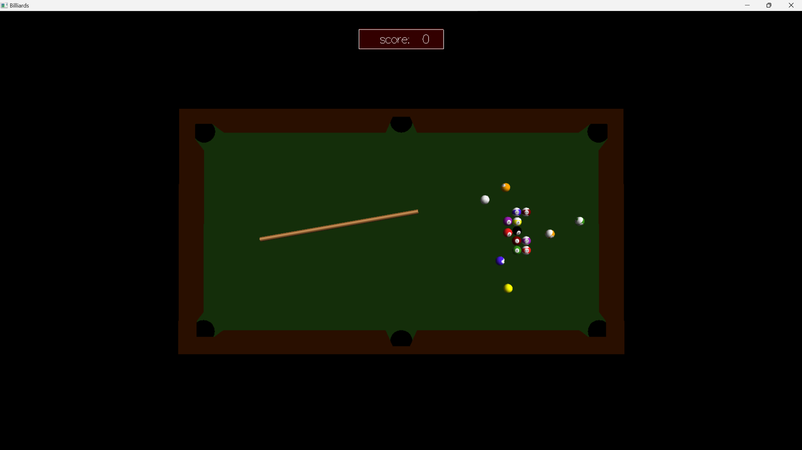
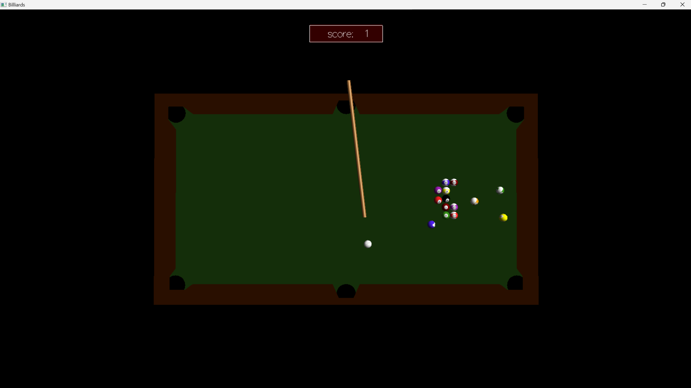
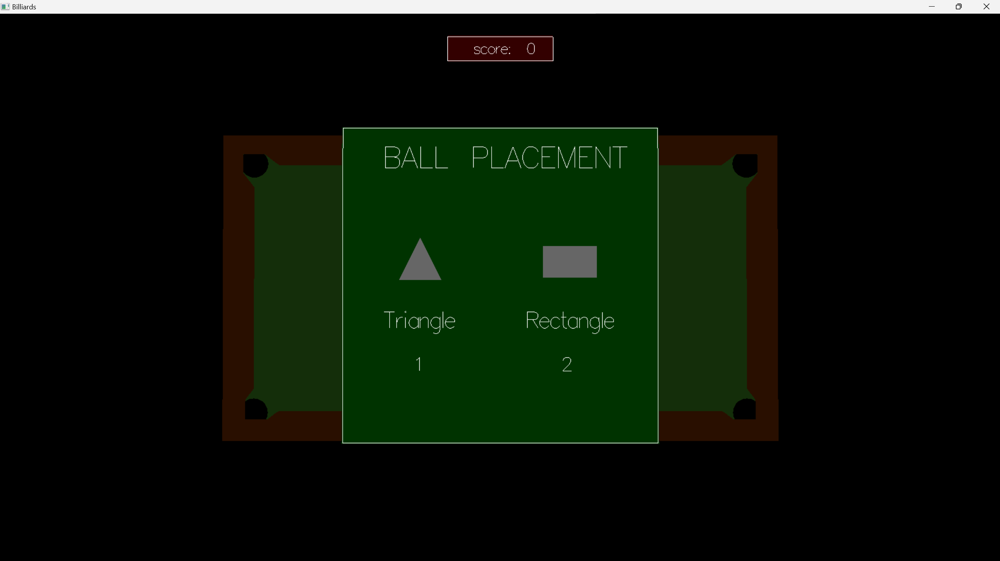
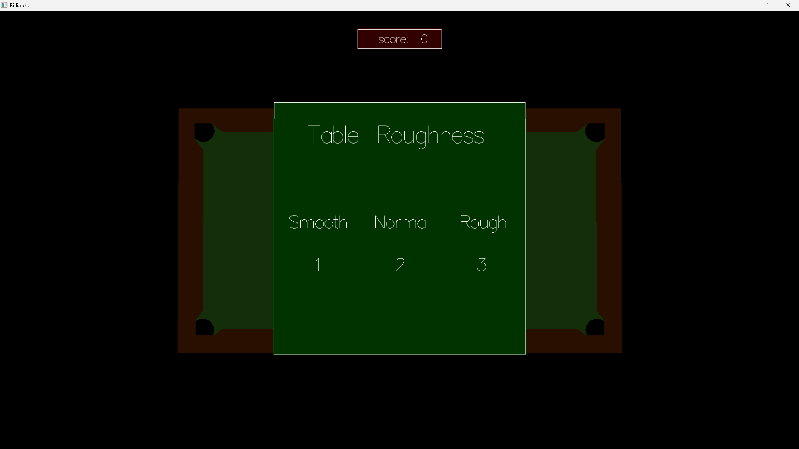
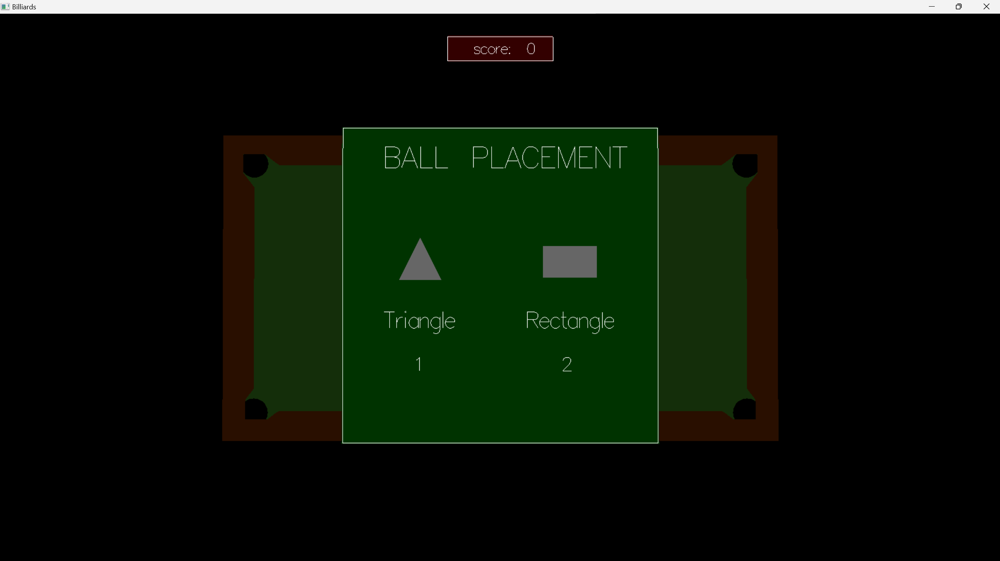
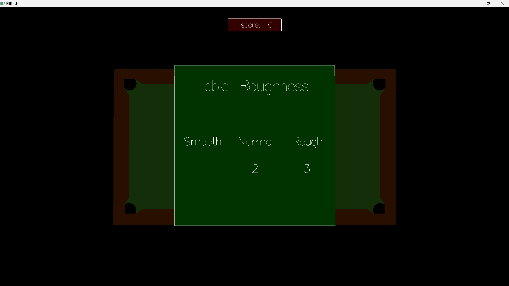

Billiards
PROJECT TYPE
University Project - C, OpenGL
Description
A small demo game used to mimic a billiards game. This was our first game development project we did in university and is a single-player game that follows the standard rules of Billiard, allowing players to use and aim a cue to shoot the balls on the table. This project was our first game-related project and required us to figure out and implement semi-realistic physics so that the game would produce expected and realistic outcomes when shooting and hitting the balls.
LAST UPDATED
2023
Development Team
- Zack Cornfield
- Thomas Stiles
- Jacob Mondi
Project Planning and Tools
- Doxygen
- Weekly Meetings
Trailer
Features Developed by Me
Ball Class/Algorithm
- Ball Physics: Designed and implemented a class to handle the properties and behaviors of billiard balls, including position, velocity, and collision detection.
- Collision Checks: Developed algorithms for checking for collisions between ball-ball and ball-wall.
Stick Algorithm
- Aiming Mechanism: Co-developed the algorithm for the stick's aiming mechanism, allowing players to precisely control the direction and force of their shots.
- Force Application: Implemented the logic for applying force to the cue ball, factoring in the angle and power of the shot to produce realistic ball trajectories.
Stick Class
- Class Design: Created a class to encapsulate the properties and behaviors of the billiard stick, including position, rotation, and user input handling.
- Rendering: Implemented the rendering of the stick using legacy OpenGL, ensuring it visually aligns with the player's aim and interactions.
Game Loop/Logic
- Game Logic Integration: Co-developed the main game loop, integrating all game components, including ball physics, stick mechanics, and collision detection.
- Frame Management: Ensured smooth gameplay by managing frame updates, rendering cycles, and user inputs effectively within the main game loop.
Menu/UI
 



- UI Design: Designed and implemented the game’s menu system, providing options for starting a new game, viewing instructions, and exiting the game.
- Navigation: Developed the logic for menu navigation, enabling users to interact with the game’s UI seamlessly.